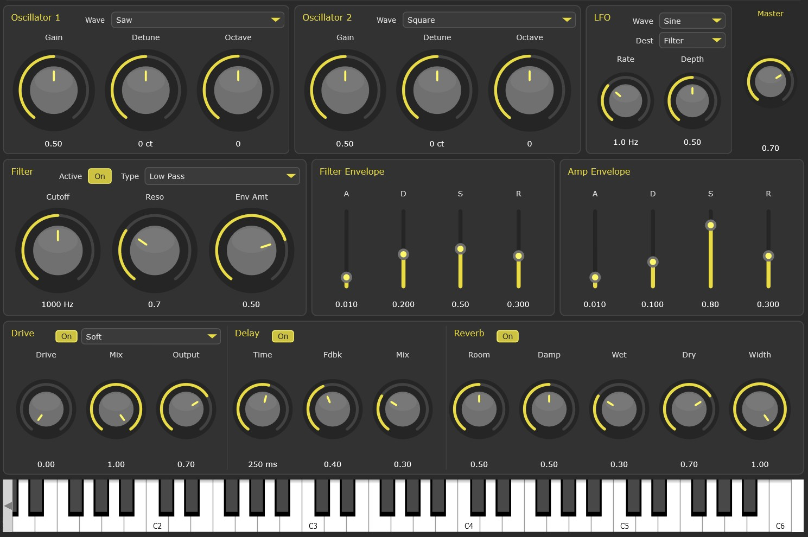
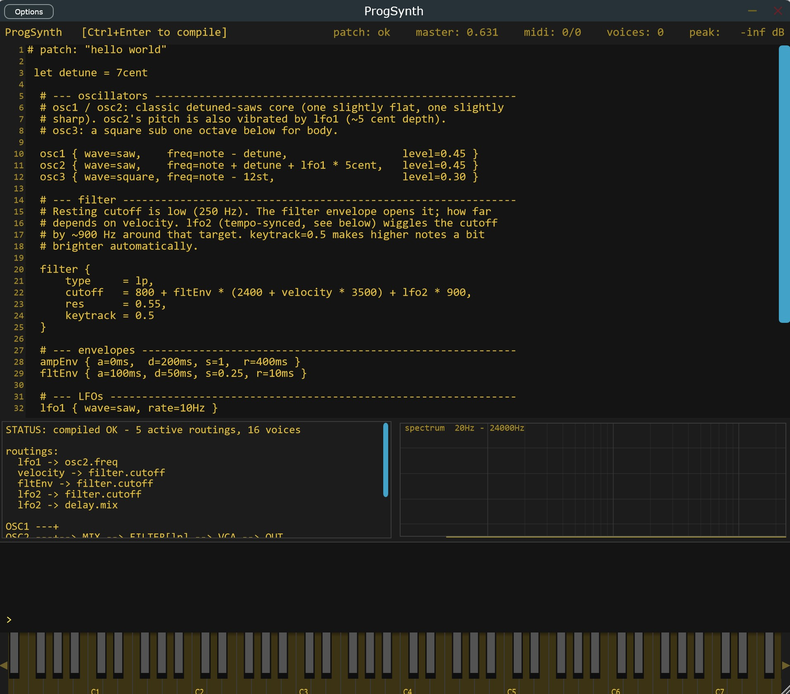

transmission / 2026
signal sound engineering music
Alien Sound Engineering create open-source signal manipulation tools, and music. Following the signal, shaping it, being shaped by it, to explore alternative spaces that don't yet have names.
─────────── ::ασε~ ── alien sound engineering
transmission / 2026
Alien Sound Engineering create open-source signal manipulation tools, and music. Following the signal, shaping it, being shaped by it, to explore alternative spaces that don't yet have names.
home / transmission
The
Every sound that exists is a negotiation between symmetry and collapse. A sine wave is a perfect agreement, a single frequency repeating itself without contradiction, a form so balanced it carries no identity. But the moment that symmetry fractures, harmonics appear, overtones stacking above the fundamental like echoes of a structure trying to remember its own shape.
Phase is the silent axis. Two identical waves, slightly displaced in time, can reinforce each other into something twice as present, or cancel into nothing. The universe does not distinguish between construction and erasure, it only reads alignment. What we call sound design is, at its core, the practice of choosing which alignments to honor and which to betray.


technology / synth.01
Open-Source, work as VST3 plugin or in standalone mode.
It combines dual anti-aliased oscillators, a state-variable filter,
dual ADSR envelopes, a multi-wave LFO, integrated multi-FX,
preset management. Built on JUCE.
DOWNLOAD FROM HERE
control / topology
reading / instrument character
-> polyblep oscillators
-> filter cutoff / resonance
-> envelope movement
-> lfo destination control
-> drive / distortion
-> delay line
-> reverb
-> output
The goal of this project is share the signal with everyone. For this reason, you can use it, modify it, and do whatever you want with it. We know you'll use this technology to the fullest and share it with all the means available to help us spread the signal.
The code and the plugin are are freely available on GitHub
technology / progsynth
Open-Source, works as VST3 plugin or in standalone mode.
A programmable subtractive synthesizer driven by a typed
domain-specific language. Patches are written as code, compiled to
stack-machine bytecode, and executed on the audio thread with
no allocations and no exceptions. Built on JUCE.
DOWNLOAD FROM HERE
control / topology
reading / instrument character
-> dsl source
-> typed compiler
-> stack-machine bytecode
-> three oscillators
-> filter cutoff / resonance
-> envelope movement
-> dual lfo routing
-> fx chain
-> output
ProgSynth treats the patch as a program. The instrument is the language,
the language is the signal. You write, you compile, you hear, you iterate.
Free to use, modify, and redistribute. Bend the grammar, share the dialect.
The code and the plugin are freely available on GitHub
music / album.01
A transmission drifts in from the far side of sleep: a lattice of alien atmospheres, hand-shaped tones, and voltage-borne dust, all suspended in a sky that never fully resolves. The machine is shaping the signal as it moves, bending code into an architecture of emotions.
tracks / readout
zero.one
zero.two
zero.three
zero.four
zero.five
Five tracks. List completed.
position / role
Album.01 is available for streaming on all major platform and for buying on iTunes.
Listen on Spotify